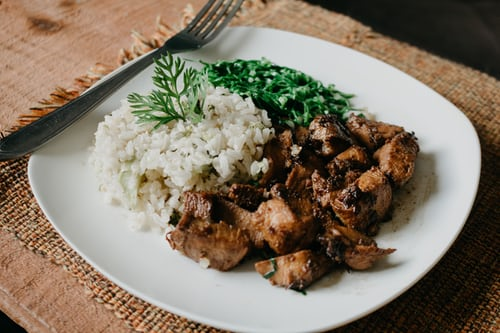

Bulking
The first fitness plan/diet we are going to talk about is bulking for bulking you do not have to watch what you are eating as much infact it will be a challenge to eat enough, most people who are trying to bulk, their main issue is their protein intake, the amount of protein intake that you have will play a huge impact on the way your body adjsuts to the diet that you are putting your body on, if your body gets used to the amount of calories and protein that your body puts in and it is not enough then you will not bulk like youd like, or have to do it for much longer. for an average person, 175 lbs, you want to have close to 165g of protein a day. for people who weigh more you want that number to be higher. a good rule of thumb is to have just as much protein as you do carbohydrates in your meals.
The best way to bulk is chicken and rice the amount of calories/protein in chicken and rice is perfect if you have that supplemented with two other meals a day equal in protein and calories. another good protein supplement is fish.

Cutting

fish is an excellent source of protein. fish is also a great protein source for if you are wanting to cut. the thing you want to remember most while cutting is that you want to have a calorie defecit while still upholding the amount of protein that your body needs to build muscle, a good rule of thumb is to have atleast a 2-1 ratio of protein to carbohydrates, or 3-1 is optimal, you want your body to burn off the fat that it has stored in your body as energy rather than putting carbohydrates in your body to burn, if it burns the carbohydrates first it is harder to burn the fat and you will have to cut for longer, the best way to do this is chicken and rice, fish, check the nutrition label of any food that you are shopping for to see the ratio of carbs to protein.